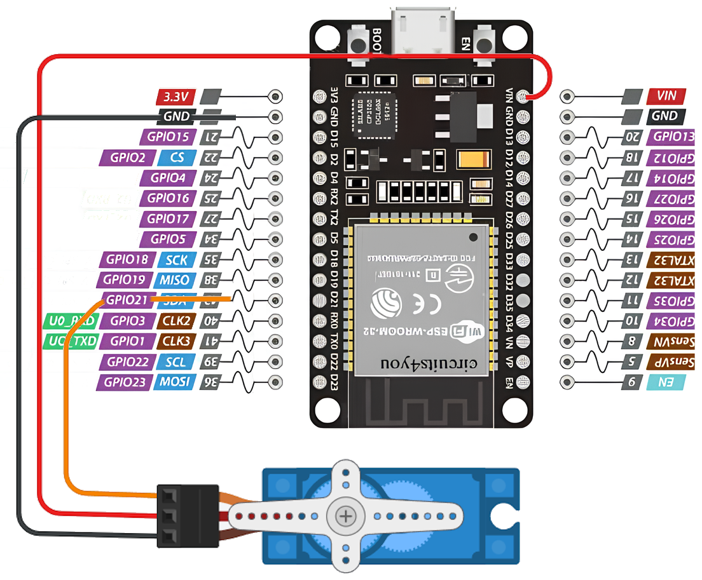

💡 Що потрібно?
- ESP32
- Серво-мотор (наприклад, SG90)
- Блок живлення 5В або USB
- Дроти, макетна плата
🔌 Підключення
Підключіть червоний провід сервомотора до 5V, чорний — до GND, а сигнал — до GPIO (наприклад, 21).
⚙️ Код керування серво
from machine import Pin, PWM
from time import sleep
servo = PWM(Pin(21), freq=50)
while True:
servo.duty(20)
sleep(1)
servo.duty(77)
sleep(1)
servo.duty(120)
sleep(1)

Сервопривід змінює своє положення в залежності від сигналу PWM.